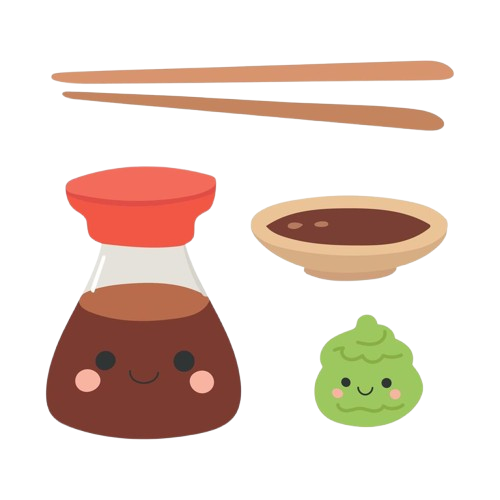
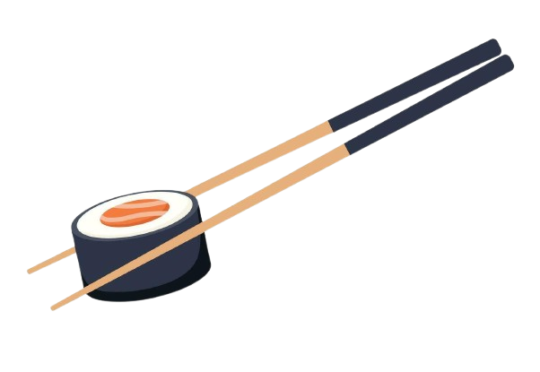
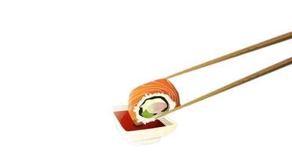
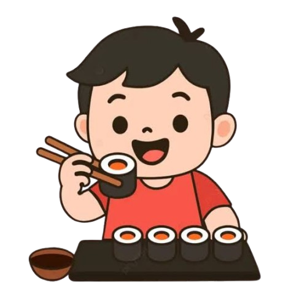
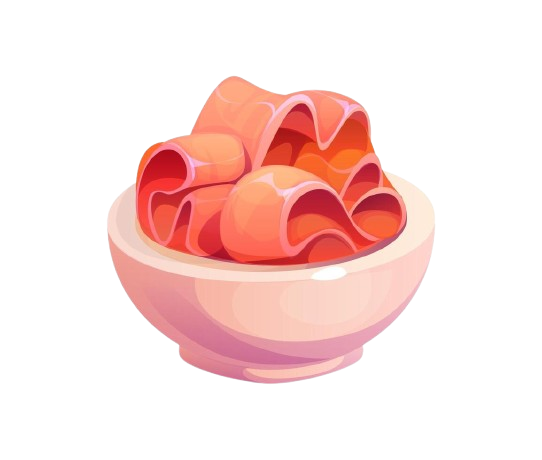
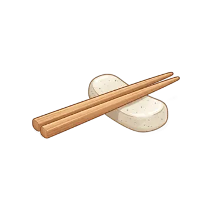

Preparing soy sauce and wasabi
First, pour some soy sauce into a dish. If you like your sushi spicy, add some wasabi to the piece of sushi or mix a little into the soy sauce.

Holding the piece of sushi
Hold the piece of sushi by the middle using either your hands or chopsticks; both methods are perfectly acceptable according to Japanese etiquette.

Dip the piece the right way.
Turn the piece slightly so that the fish or seaweed side faces the soy sauce, then dip it; avoid dipping the rice to prevent it from falling apart.

Consume the piece in one go.
Place the entire piece of sushi in your mouth in a single bite so the flavors harmonize and you experience the wonderful taste of the sushi.

Cleaning the mouth with ginger
Eat a piece of pickled ginger after a piece of sushi to cleanse your palate between that piece and the next.

Placing the chopsticks down during a break
When you want to pause to drink water or speak, place it horizontally on its designated holder.